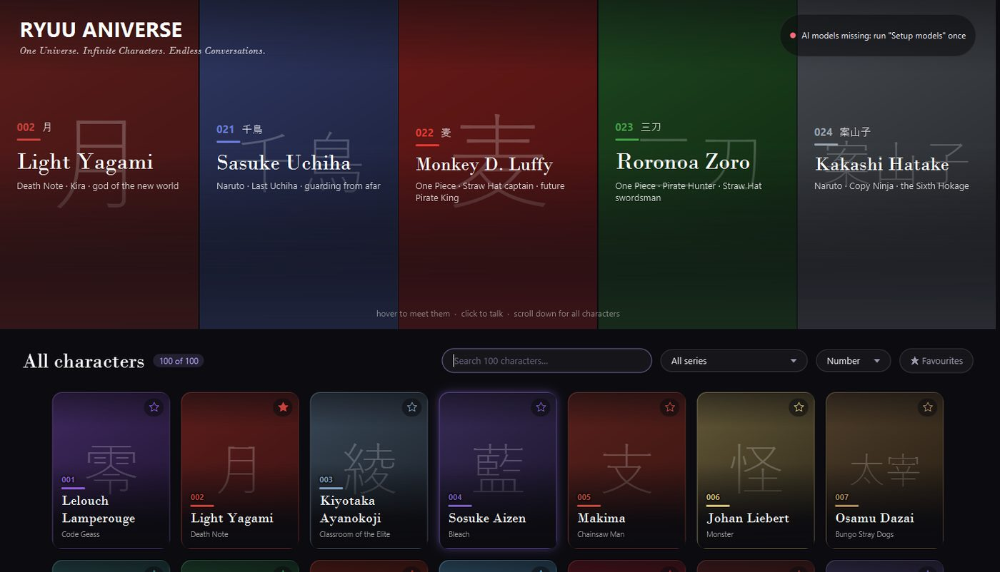
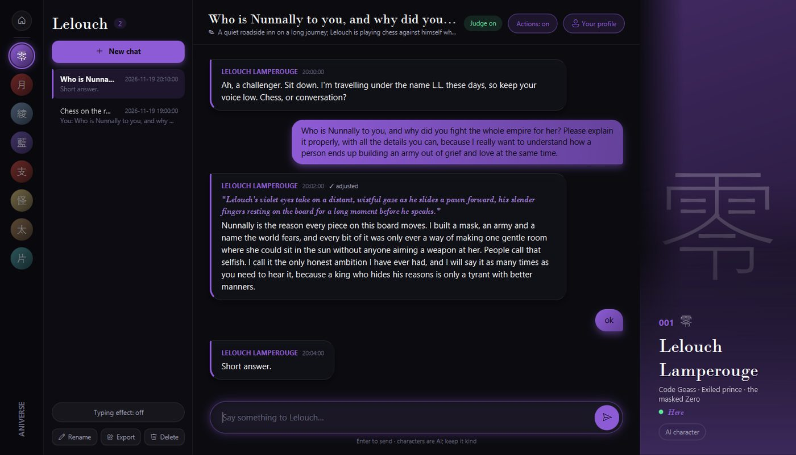

06 · Character chat, 100 characters
Ryuu Aniverse
Chat with 100 anime characters from 41 series on your own computer. One local model plays each of them from their own knowledge pack, and a judge checks every reply for character and facts.
Built by Adithya V, computer science student at KCT, Coimbatore.


About Ryuu Aniverse
Ryuu Aniverse is a private desktop app for chatting with 100 anime characters from 41 series, from Lelouch and Light to Gojo, Levi and Tanjiro. Each one is set at the end of their story, so they remember what they lived through.
Every character has a knowledge pack with personality, speech style, facts, relationships and canon events. One local model, Llama-3 8B Stheno, becomes each character through a prompt built from that pack, with no fine-tuning per character.
A phi4-mini judge and word rules read every reply for staying in character, getting facts and relationships right and keeping romance sweet and never explicit, and rewrite it when it slips. It runs fully offline. Ryuu Aniverse is an unofficial, non-commercial fan project; the characters belong to their creators.
Related work


More projects by Adithya V
- TQQ ChatboxFive fine-tuned models, one app
- Serene Mind AIWellness companion, own model
- Ryuu Explainer AIOffline AI assistant
- Ryuu Hostel Management SystemWeb system, live demo
- KCT IDEA Lab websiteCollege website, built solo
- Personality AICharacter chatbot
- Ryuu SmartPickupStartup prototype
- PawFinderWeb platform, live
- Automobile LabHardware and web interface
- CS GPT for CBSE 11 & 12Learning tool
- Ryuu v1 modelsSix open models